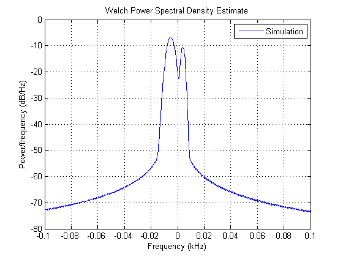
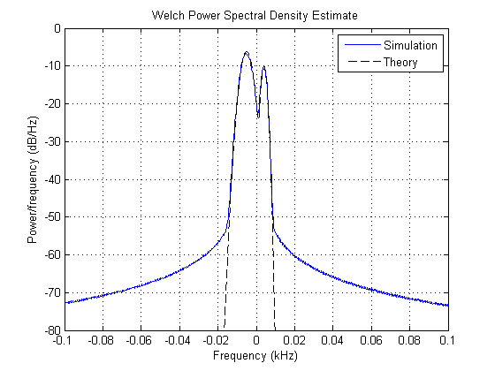
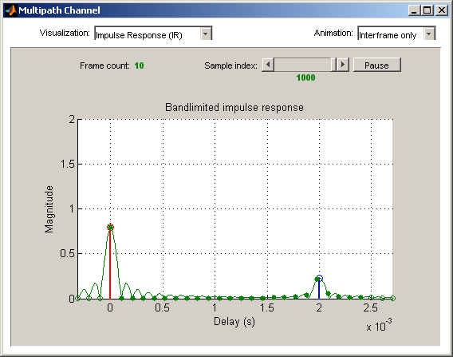
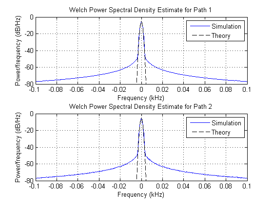
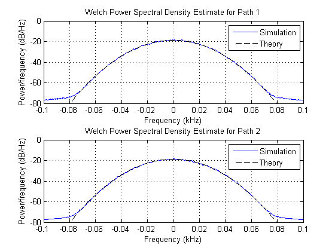

HF Ionospheric Channel Models
This demo simulates High-Frequency (HF) ionospheric channels, based on the models described in Recommendation ITU-R F.1487. In particular, it shows how to simulate the general Watterson channel model, and other simplified channel models used in the quantitative testing of HF modems. It makes use of the Rayleigh multipath fading channel object and the Gaussian and bi-Gaussian Doppler objects from Communications Toolbox™.
Contents
ITU-R HF Channel Models: Overview
In HF ionospheric radio communications, the transmitted signal can bounce off several times from the E and F layers of the ionosphere, which results in several propagation paths, also called modes [1]. Typically, the multipath delay spreads are large, as compared to mobile radio. Also, the signal can suffer from Doppler spread due to the turbulence of the ionosphere. However, the fading rate is usually smaller than for mobile radio.
Recommendation ITU-R F.1487 [1] proposes a general Gaussian scatter model for the simulation of HF ionospheric channels. This model is based on Watterson's channel model [2]. Simpler models are also proposed in [1] for use in HF modem tests, with specified parameters.
Initialization of Simulation-Specific Parameters
The simulation sampling rate is specified, and kept the same for the remainder of the demo. The input to the channel simulator is oversampled by a factor of four.
M = 4; % Modulation order hModem = modem.pskmod(M); % 4-PSK modulator object Rsym = 1200; % Input symbol rate Rbit = Rsym * log2(M); % Input bit rate Nos = 4; % Oversampling factor ts = (1/Rbit) / Nos; % Input sample period
Watterson Channel Model
The Watterson channel model consists of a tapped delay line, where each tap corresponds to a resolvable propagation path. On each tap, two magneto-ionic components are present: each one is modeled as a complex Gaussian random process with a given gain and frequency shift, and whose Doppler spectrum is Gaussian with a given standard deviation [2]. Hence, each tap is characterized by a bi-Gaussian Doppler spectrum, which consists of two Gaussian functions in the frequency domain, each one with its own set of parameters (power gain, frequency shift, and standard deviation).
In this demo, we follow the Watterson simulation model specified in [1], in which the complex fading process on each tap is obtained by adding two independent frequency-shifted complex Gaussian random processes (with Gaussian Doppler spectra) corresponding to the two magneto-ionic components. This simulation model leads to a complex fading process whose envelope is in general not Rayleigh distributed. Hence, to be faithful to the simulation model, we cannot simply generate a Rayleigh channel with a bi-Gaussian Doppler spectrum. Instead, we generate two independent Rayleigh channels, each with a frequency-shifted Gaussian Doppler spectrum, gain-scale them, and add them together to obtain the Watterson channel model with a bi-Gaussian Doppler spectrum. For simplicity, we simulate a Watterson channel with only one tap.
A frequency-shifted Gaussian Doppler spectrum can be seen as a bi-Gaussian Doppler spectrum in which only one Gaussian function is present (the second one having a zero power gain). Hence, to emulate the frequency-shifted Gaussian Doppler spectrum of each magneto-ionic component, we construct a bi-Gaussian Doppler object such that one of the two Gaussian functions has the specified frequency shift and standard deviation, while the other has a zero power gain.
The first magneto-ionic component has a Gaussian Doppler spectrum with standard deviation sGauss1, frequency shift fGauss1, and power gain gGauss1. A bi-Gaussian Doppler object dop1 is constructed such that the second Gaussian function has a zero power gain (its standard deviation and center frequency are hence irrelevant, and take on default values), while the first Gaussian function has a normalized standard deviation sGauss1/fd and a normalized frequency shift fGauss1/fd, where the normalization factor fd is the maximum Doppler shift of the corresponding channel. In this example, since the gain of the second Gaussian function is zero, the value assigned to the gain of the first Gaussian function is irrelevant (we leave it to its default value of 0.5), because the associated channel object created later normalizes the Doppler spectrum to have a total power of 1.
Type help doppler.bigaussian for more information on how to construct a bi-Gaussian Doppler object.
fd = 10; % Chosen maximum Doppler shift for simulation sGauss1 = 2.0; fGauss1 = -5.0; dop1 = doppler.bigaussian('SigmaGaussian1', sGauss1/fd, ... 'CenterFreqGaussian1', fGauss1/fd, ... 'GainGaussian2', 0)
dop1 =
SpectrumType: 'BiGaussian'
SigmaGaussian1: 0.2000
SigmaGaussian2: 0.7071
CenterFreqGaussian1: -0.5000
CenterFreqGaussian2: 0
GainGaussian1: 0.5000
GainGaussian2: 0
To simulate the first magneto-ionic component, we construct a single-path Rayleigh channel object h1 with a frequency-shifted Gaussian Doppler spectrum specified by the Doppler object dop1. The average path power gain of the channel is 1 (0 dB).
h1 = rayleighchan(ts, fd); h1.DopplerSpectrum = dop1; h1.StorePathGains = 1; % Enables storage of path gains h1.ResetBeforeFiltering = 0; % The channel is not reset between frames
Similarly, the second magneto-ionic component has a Gaussian Doppler spectrum with standard deviation sGauss2, frequency shift fGauss2, and power gain gGauss2. A bi-Gaussian Doppler object dop2 is constructed such that the second Gaussian function has a zero power gain (its standard deviation and center frequency are hence irrelevant, and take on default values), while the first Gaussian function has a normalized standard deviation sGauss2/fd and a normalized frequency shift fGauss2/fd (again its power gain is irrelevant).
sGauss2 = 1.0; fGauss2 = 4.0; dop2 = doppler.bigaussian('SigmaGaussian1', sGauss2/fd, ... 'CenterFreqGaussian1', fGauss2/fd, ... 'GainGaussian2', 0)
dop2 =
SpectrumType: 'BiGaussian'
SigmaGaussian1: 0.1000
SigmaGaussian2: 0.7071
CenterFreqGaussian1: 0.4000
CenterFreqGaussian2: 0
GainGaussian1: 0.5000
GainGaussian2: 0
To simulate the second magneto-ionic component, we construct a single-path Rayleigh channel object h2 with a frequency-shifted Gaussian Doppler spectrum specified by the Doppler object dop2.
h2 = rayleighchan(ts, fd); h2.DopplerSpectrum = dop2; h2.StorePathGains = 1; h2.ResetBeforeFiltering = 0;
We compute in the loop below the output to the Watterson channel in response to an input signal, and store it in s. In obtaining s, the first filter operation emulates the effect of the first magneto-ionic component, while the second filter operation emulates the effect of the second component.
To obtain the desired power gains, gGauss1 and gGauss2, of each magneto-ionic component, we need to scale the output signal for each magneto-ionic component by their corresponding amplitude gains, sqrt(gGauss1) and sqrt(gGauss2).
Due to the low Doppler shifts found in HF environments, obtaining measurements for the Doppler spectrum using the channel visualization tool can be very time consuming. Instead, we store the channel's complex path gains and later compute the Doppler spectrum for each path at the command line. In the loop below, the channel's complex path gains are obtained by summing (after scaling by the corresponding amplitude gains) the complex path gains associated with each magneto-ionic component, and then stored in y.
gGauss1 = 1.2; gGauss2 = 0.25; Nsamp = 2e6; % Total number of channel samples Nsamp_f = 1000; % Number of samples per frame Nframes = Nsamp/Nsamp_f; % Number of frames s = zeros(Nsamp, 1); y = zeros(Nsamp, 1); for iFrames = 1:Nframes inputSig = modulate(hModem, randi([0 M-1], Nsamp_f, 1)); s((1:Nsamp_f)+(iFrames-1)*Nsamp_f) = sqrt(gGauss1) * filter(h1, inputSig) ... + sqrt(gGauss2) * filter(h2, inputSig); y((1:Nsamp_f)+(iFrames-1)*Nsamp_f) = sqrt(gGauss1) * h1.PathGains ... + sqrt(gGauss2) * h2.PathGains; end
The Doppler spectrum is estimated from the complex path gains and plotted.
Hs = spectrum.welch('Hamming', Nsamp/100, 50); figure; psd(Hs, y, 'Fs', 1/ts, 'SpectrumType', 'twosided', 'Centerdc', true) axis([-0.1 0.1 -80 0]); legend('Simulation');
The theoretical bi-Gaussian Doppler spectrum is overlaid to the estimated Doppler spectrum. We observe a good fit between both.
f = -1/(2*ts): 0.1 :1/(2*ts); Sd = gGauss1 * 1/sqrt(2*pi*sGauss1^2) * exp(-(f-fGauss1).^2/(2*sGauss1^2)) ... + gGauss2 * 1/sqrt(2*pi*sGauss2^2) * exp(-(f-fGauss2).^2/(2*sGauss2^2)); hold on; plot(f(Sd>0)/1e3, 10*log10(Sd(Sd>0)), 'k--'); legend('Simulation', 'Theory');
ITU-R F.1487 Low Latitudes, Moderate Conditions (LM) Channel Model
Recommendation ITU-R F.1487 specifies simplified channel models used in the quantitative testing of HF modems. These models consist of two independently fading paths with equal power. On each path, the two magneto-ionic components are assumed to have zero frequency shift and equal variance: hence the bi-Gaussian Doppler spectrum on each tap reduces to a single Gaussian Doppler spectrum, and the envelope of the complex fading process is Rayleigh-distributed.
Below, we construct a channel object according to the Low Latitudes, Moderate Conditions (LM) channel model specified in Annex 3 of ITU-R F.1487. The path delays are 0 and 2 ms. The frequency spread, defined as twice the standard deviation of the Gaussian Doppler spectrum, is 1.5 Hz. The Gaussian Doppler spectrum object is hence constructed with a normalized standard deviation of (1.5/2)/ fd, where fd is chosen as 1 for simplicity (type help doppler.gaussian for more information).
close(gcf); fd = 1; lmchan = rayleighchan(ts, fd); lmchan.PathDelays = [0 2] * 1e-3; lmchan.AvgPathGaindB = [0 0]; sigmaGaussian = (1.5/2) / fd; lmchan.DopplerSpectrum = doppler.gaussian(sigmaGaussian);
The code below simulates the LM channel and visualizes the bandlimited impulse response using the channel visualization tool.
lmchan.StoreHistory = 1; lmchan.ResetBeforeFiltering = 0; lmchan.NormalizePathGains = 1; % The total average power in all paths equals one Nsamp_f = 1e3; Nframes = 10; for iFrames = 1:Nframes y = filter(lmchan, modulate(hModem, randi([0 M-1], Nsamp_f, 1))); plot(lmchan); end
Due to the very low Doppler shift used, it is more efficient to store the channel paths gains and later compute the Doppler spectrum for each path at the command line.
channel_vis(lmchan, 'close'); lmchan.StoreHistory = 0; % Greatly speeds up simulation lmchan.StorePathGains = 1; % Enables storage of path gains Nsamp = 2e6; % Total number of channel samples Nsamp_f = 1000; % Number of samples per frame Nframes = Nsamp/Nsamp_f; % Number of frames s = zeros(Nsamp, 1); y = zeros(Nsamp, 2); for iFrames = 1:Nframes inputSig = modulate(hModem, randi([0 M-1], Nsamp_f, 1)); s( (1:Nsamp_f) + (iFrames-1)*Nsamp_f ) = filter(lmchan, inputSig); y( (1:Nsamp_f) + (iFrames-1)*Nsamp_f, :) = lmchan.PathGains; end
The Doppler spectrum for each path is estimated and plotted, alongside the theoretical Gaussian Doppler spectrum.
f = -1/(2*ts) : 0.1 : 1/(2*ts); Sd = 0.5 * 1/sqrt(2*pi*(sigmaGaussian*fd)^2) ... * exp(-f.^2/(2*(sigmaGaussian*fd)^2)); Hs = spectrum.welch('Hamming', Nsamp/100, 50); figure; hs1 = subplot(2, 1, 1); hold on; psd(Hs, y(:,1), 'Fs', 1/ts, 'SpectrumType', 'twosided', 'Centerdc', true) axis([-0.1 0.1 -80 0]); plot(hs1, f(Sd>0)/1e3, 10*log10(Sd(Sd>0)), 'k--'); legend('Simulation', 'Theory'); title('Welch Power Spectral Density Estimate for Path 1'); hs2 = subplot(2, 1, 2); hold on; psd(Hs, y(:,2), 'Fs', 1/ts, 'SpectrumType', 'twosided', 'Centerdc', true) axis([-0.1 0.1 -80 0]); plot(hs2, f(Sd>0)/1e3, 10*log10(Sd(Sd>0)), 'k--'); legend('Simulation', 'Theory'); title('Welch Power Spectral Density Estimate for Path 2');
ITU-R F.1487 High Latitudes, Disturbed Conditions (HD) Channel Model
We use the function stdchan to construct a channel object according to the HD model. For a list of standardized channel models supported by stdchan, type help stdchan. When using stdchan to construct ITU-R HF channel models, the maximum Doppler shift must be set to 1 Hz: this ensures that the Gaussian Doppler spectrum of the constructed channel has the correct standard deviation.
close(gcf);
fd = 1;
hdchan = stdchan(ts, fd, 'iturHFHD')
hdchan =
ChannelType: 'Rayleigh'
InputSamplePeriod: 1.0417e-004
DopplerSpectrum: [1x1 doppler.gaussian]
MaxDopplerShift: 1
PathDelays: [0 0.0070]
AvgPathGaindB: [0 0]
NormalizePathGains: 1
StoreHistory: 0
StorePathGains: 0
PathGains: [-0.4295 + 0.2534i 0.8234 + 0.2235i]
ChannelFilterDelay: 0
ResetBeforeFiltering: 1
NumSamplesProcessed: 0
As before, we obtain the path gains by processing random data through the channel. These path gains are stored in y for post-processing.
hdchan.StorePathGains = 1; hdchan.ResetBeforeFiltering = 0; hdchan.NormalizePathGains = 1; s = zeros(Nsamp, 1); y = zeros(Nsamp, 2); for iFrames = 1:Nframes inputSig = modulate(hModem, randi([0 M-1], Nsamp_f, 1)); s( (1:Nsamp_f) + (iFrames-1)*Nsamp_f ) = filter(hdchan, inputSig); y( (1:Nsamp_f) + (iFrames-1)*Nsamp_f, :) = hdchan.PathGains; end
The Doppler spectrum for each path is estimated and plotted, alongside the theoretical Gaussian Doppler spectrum.
sigmaGaussian = 30/2; f = -1/(2*ts) : 0.1 : 1/(2*ts); Sd = 0.5 * 1/sqrt(2*pi*(sigmaGaussian*fd)^2) ... * exp(-f.^2/(2*(sigmaGaussian*fd)^2)); Hs = spectrum.welch('Hamming', Nsamp/100, 50); figure; hs1 = subplot(2, 1, 1); hold on; psd(Hs, y(:,1), 'Fs', 1/ts, 'SpectrumType', 'twosided', 'Centerdc', true) axis([-0.1 0.1 -80 0]); plot(hs1, f(Sd>0)/1e3, 10*log10(Sd(Sd>0)), 'k--'); legend('Simulation', 'Theory'); title('Welch Power Spectral Density Estimate for Path 1'); hs2 = subplot(2, 1, 2); hold on; psd(Hs, y(:,2), 'Fs', 1/ts, 'SpectrumType', 'twosided', 'Centerdc', true) axis([-0.1 0.1 -80 0]); plot(hs2, f(Sd>0)/1e3, 10*log10(Sd(Sd>0)), 'k--'); legend('Simulation', 'Theory'); title('Welch Power Spectral Density Estimate for Path 2');
References:
[1] Recommendation ITU-R F.1487, "Testing of HF modems with bandwidths
of up to about 12 kHz using ionospheric channel simulators," 2000.
[2] C. C. Watterson, J. R. Juroshek, and W. D. Bensema, "Experimental
confirmation of an HF channel model," IEEE(R) Trans. Commun. Technol.,
vol. COM-18, no. 6, Dec. 1970.